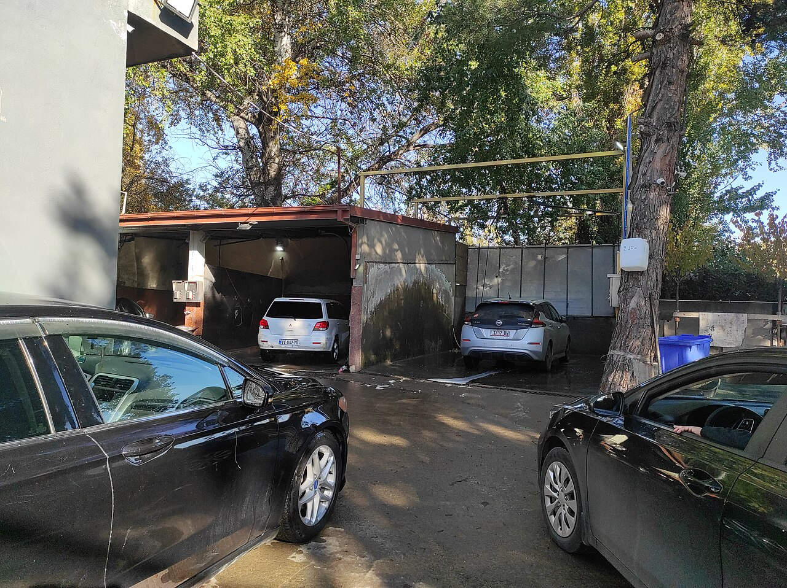

Washing Your Car in Winter: The Right Way (and When to Skip It)
A winter wash saves your car from rust — but wash on the wrong day and you'll freeze your own doors shut.

Photo: David Osipov, CC BY 4.0, via Wikimedia Commons

Plenty of drivers skip washing the car all winter — "it's just going to get dirty again." And plenty of others wash on the coldest day of the year and end up with frozen locks, doors that won't close, and ice in the window tracks. Both are mistakes. Winter washing is one of the best things you can do for your car's lifespan, but only if you wash the right parts, on the right day, the right way.
Why it's wrong
Skipping washes all winter lets road salt sit on metal for months. Salt mixed with melting snow speeds up rust exactly where you can't see it — the underbody, wheel wells, brake lines, and rocker panels. By spring, the damage is done and it's permanent. Washing in extreme cold causes the opposite problem: water freezes in door locks, in the rubber seals around the doors, and in the window tracks, and you can end up with doors that won't open — or worse, won't latch properly. And a brush-style automatic wash in winter drags the previous cars' salt and grit across your paint. Each mistake has a real cost, and each is avoidable.
The right way
- Wash every two to three weeks in salt season. That's the rhythm that keeps salt from sitting long enough to do real damage. Wash after big storms too, when salt use is heaviest.
- Pick a day above -5°C if you can. Below about -10°C, skip the wash and wait for a milder day. The salt can wait a few days; frozen locks can't be undone quickly.
- Use a touchless wash with an underbody spray. The underbody is the whole point of a winter wash — that's where the salt does its damage. Touchless also means no brushes dragging grit across your paint.
- Dry the door seals after. Wipe the rubber seals around the doors and trunk dry, then spray them with silicone lubricant so they don't freeze shut overnight.
- Don't forget the fuel door and the locks. A frozen fuel door is a miserable discovery at a gas station. Dry around it, and keep lock de-icer in your pocket.
- If you wash at home, aim the hose underneath. A garden hose with a spray nozzle aimed up into the wheel wells and under the rocker panels does real work — that's the wash that matters most.
The rundown
Wash every two to three weeks, touchless with an underbody spray, on a day warmer than -5°C, and dry the seals when you're done. Skip the wash in extreme cold and skip the brush wash in winter. The goal isn't a shiny car — it's a car that isn't rusting from the bottom up while you wait for spring.
← Back to the rust protection guide